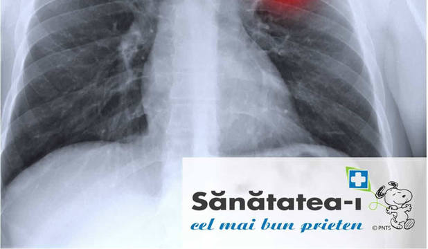

Bolile sistemului circulator şi cancerul sunt afecţiunile care au ucis cei mai mulţi europeni, potrivit datelor Comisiei Europene. Sinuciderile, urmate de accidentele de transport, sunt principalele cauze ale deceselor pe teritoriul Uniunii Europene.
În România, principala cauză de mortalitate rămâne boala cardiovasculară, potrivit doctorului Adrian Pană, secretar de stat în cadrul Ministerului Sănătăţii, care citează statisticile conform cărora 40 de români mor zilnic din această cauză.
Accidentul vascular cerebral se află şi el pe lista celor mai frecvente afecţiuni cardiace. „Se moare din cauza infarctului la vârste tot mai tinere. În plus, accidentul vascular cerebral este şi el întâlnit tot mai des în rândul populaţiei tinere, fapt ce ar trebui să reprezinte un semnal de alarmă. Un bărbat sau o femeie care la 40-50 de ani suferă un accident vascular cerebral în urma căruia rămâne paralizat, nu numai că este dependent de familie şi consumator de fonduri, dar nici nu mai produce ceva. Este o persoană care consumă fără amai produce, fapt ce ar trebui luat în considerare în condiţiile în care ştii că ai nişte mecanisme prin care poţi preveni acest lucru”, afirmă dr. Pană.
Statisticile Comisiei Europene arată că în 2010 s-au înregistrat 210 decese la 100.000 de locuitori din ţările membre ale UE. Bulgaria ocupă primul loc în topul ţărilor din comunitate unde se moare din cauza bolilor circulatorii. Bulgaria este urmată de România cu 548 de decese la 100.000 de locuitori, Lituania cu 496 decese la 100.000 de locuitori, Letonia cu 478 decese la 100.000 de locuitori, Estonia cu 424 de decese la 100.000 de locuitori şi Ungaria cu 419decese la 100.000 de locuitori. La polul opus în ceea ce priveşte numărul de decese înregistrate din cauza bolilor circulatorii se numără Luxemburg cu 167 de decese la 100.000 de locuitori, Danemarca cu 160 de decese la 100.000 de locuitori, Ţările de Jos cu 147 de decese la 100.000 de locuitori, Spania cu 138 de decese la 100.000 de locuitori şi Franţa cu 120 de decese la 100.000 de locuitori.
Bolile sistemului circulator le includ pe cele legate de hipertensiunea arterială, de colesterol, de diabet şi de fumat, dar cele mai comune cauze ale deceselor au fost cardiopatiile ischemice şi bolile cerebrovasculare.
Potrivit statisticilor, în ultimul deceniu s-a înregistrat o reducere accentuată la nivelul ţărilor comunitare a ratei mortalităţii cauzate de cardiopatia ischemică şi de accidentele din sectorul transporturilor - ratele combinate înregistrate la bărbaţi şi la femei scăzând cu peste 30%.
Cancerul ocupă locul doi în topul bolilor care fac cele mai multe victime în secolul XXI. Ultimele datele ale Comisiei Europene arată că această boală ucide 167 de europeni la 100.000 de locuitori. Ungaria ocupă primul loc în topul ţărilor din comunitate unde se moare din cauza cancerului. Statisticile arată că în Ungaria cancerul ucide 239 de persoane la 100.000 de locuitori. Această ţară este urmată de Slovacia cu 197 decese la 100.000 de persoane, Polonia cu 197 decese la 100.000 de persoane, Slovenia cu 196 decese la 100.000 de persoane, Republica Cehă cu 195 decese la 100.000 de persoane, Letonia cu 194 decese la 100.000 de persoane, Lituania cu 191 decese la 100.000 de persoane, Danemarca cu 190 decese la 100.000 de persoane, Estonia cu 187 decese la 100.000 de persoane şi România cu 181 decese la 100.000 de persoane.
Cele mai comune forme de cancer au inclus tumorile maligne ale laringelui, traheii, bronhiilor şi ale plămânilor, colonului şi sânului, mai arată datele Comisiei Europene.
Autorităţile consideră că numărul persoanelor care mor din cauza cancerului pot fi reduse considerabil cu ajutorul politicilor de sănătate publică. „Avem cinci tipuri de cancere care pot fi prevenite: pulmonar, mamar, colo-rectal, col şi piele. 98% din cancerele de plămân sunt datorate fumatului, nu sunt datorate poluanţilor. Mai avem şi alte tipuri de cancere care nu pot fi prevenite, dar în cazul acestora există tratament care are o rată de vindecare ridicată, cu o singură condiţie: depistarea la timp. Aici mă refer la cancerul de prostată”, a precizat secretarul de stat în ministerul Sănătăţii, dr. Adrian Pană.
Bolile psihice fac şi ele tot mai multe victime în rândul europenilor. În ultimii ani, rata sinuciderilor a crescut direct proporţional cu numărul tot mai mare al persoanelor care suferă de boli psihice.
Potrivit datelor, incidenţa sinuciderilor este de 9 persoane sub 65 de ani la 100.000 de locuitori. Pe primul loc la acest capitol se află Lituania, aici s-au înregistrat 31 sinucideri în rândul persoanelor sub 65 de ani la 100.000 de locuitori, urmată de Ungaria cu 19 sinucideri în rândul persoanelor sub 65 de ani la 100.000 de locuitori, Estonia cu 17 sinucideri în rândul persoanelor sub 65 de ani la 100.000 de locuitori, Letonia cu 16,8 sinucideri în rândul persoanelor sub 65 de ani la 100.000 de locuitori şi Finlanda cu 16,7 sinucideri în rândul persoanelor sub 65 de ani la 100.000 de locuitori. România se află la mijlocul clasamentului cu 11 sinucideri în rândul persoanelor sub 65 de ani la 100.000 de locuitori. La polul opus se situază Italia cu 5 sinucideri în rândul persoanelor sub 65 de ani la 100.000 de locuitori, Cipru cu 4 sinucideri în rândul persoanelor sub 65 de ani la 100.000 de locuitori şi Grecia cu 3 sinucideri în rândul persoanelor sub 65 de ani la 100.000 de locuitori.
„Bolile psihice sunt în continuă creştere. Sunt a treia cauză de mortalitate, dar şi de dizabilitate. Incidenţa depresiei, dar şi a altor boli psihice creşte cu un ritm alarmant”, a punctat dr. Pană.
Situaţia descrisă în România i-a determinat pe asiguratori să dezvolte produse care să adreseze această nevoie financiară de susţinere a costurilor ridicate pentru tratamentul unor boli grave.
„Asigurarea medicală pentru astfel de boli precum cancer, infarct, accident vascular cerebral preia riscul financiar al unei persoane şi îi oferă confortul psihic de a avea o sumă disponibilă în cazul diagnosticării cu o afecţiune gravă”, precizează Theodor Alexandrescu, Preşedinte Metropolitan Life.
De exemplu, un bărbat de 30 de ani care achiziţionează produsul UltraMED de la Metropolitan Life plăteşte o primă anuală de asigurare de 330 lei (aproximativ 28 lei lunar) şi are o sumă asigurată de 80.000 lei, pe care o primeşte în cazul diagnosticării cu una din cele 32 de afecţiuni acoperite, conform condiţiilor contractuale. Pentru o sumă asigurată de 150.000 lei, prima anuală este de 618 lei (aproximativ 52 lei lunar). Prima de asigurare este determinată de vârsta asiguratului la emiterea poliţei. Cu suma primită, pacientul poate primi tratamentul adecvat fie la o instituţie medicală de stat, fie în regim privat.